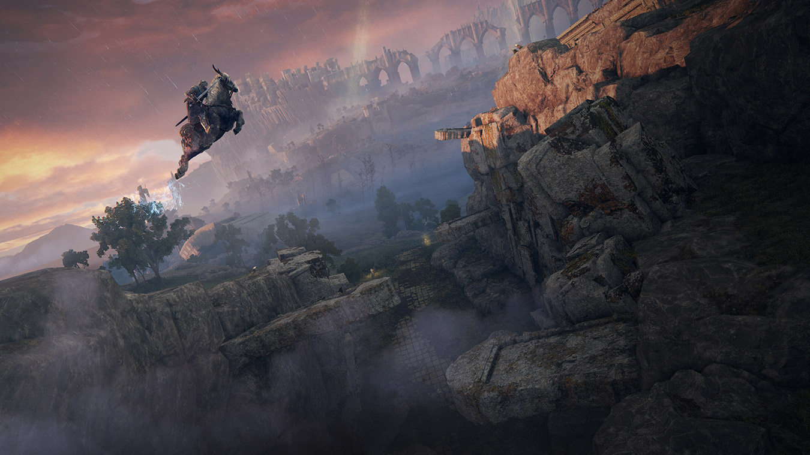
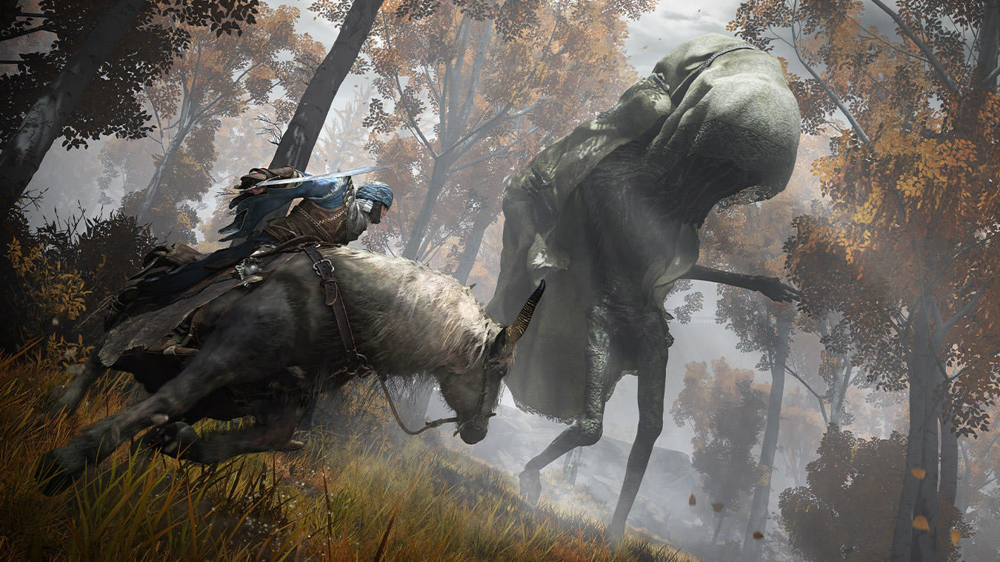
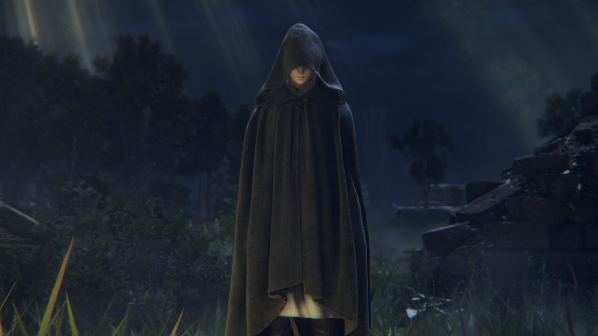

ELDEN RING
R$ 200,00
SINOPSE
Levante-se, Maculado, e seja guiado pela graça para portar o poder do Anel Prístino e se tornar
um
Lorde Prístino nas Terras Intermédias. • Um mundo vasto e emocionante Um mundo vasto onde campos
abertos e uma variedade de situações e masmorras imensas, com complexos designs tridimensionais
se
conectam com fluidez. Conforme explora, sinta a alegria de descobrir poderosas e desconhecidas
ameaças que aguardam por você, levando a um grande senso de conquista.
-
Crie seu próprio personagem: Além de personalizar a aparência do seu personagem, você
pode combinar livremente armas, armaduras e magias que equipar. Você pode desenvolver
seu personagem de acordo com seu estilo de jogo, como aumentar a força muscular para se
tornar um poderoso guerreiro, ou dominar a magia.
-
Um drama épico nascido de um mito Uma história cheia de camadas, contada em fragmentos.
Um drama épico onde os vários pensamentos dos personagens se interligam nas Terras Intermédias.
-
Jogo on-line único que conecta você livremente aos outros Além do multijogador, onde você
pode
se conectar diretamente com outros jogadores e viajarem juntos, o jogo suporta um elemento on-line
assíncrono único que permite que você sinta a presença dos outros.


